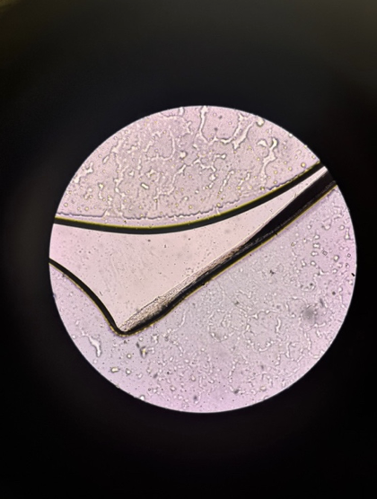
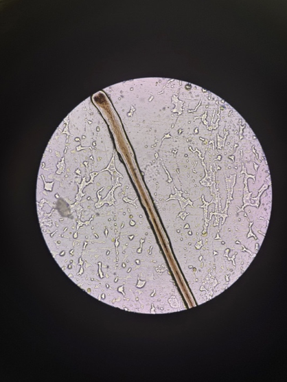
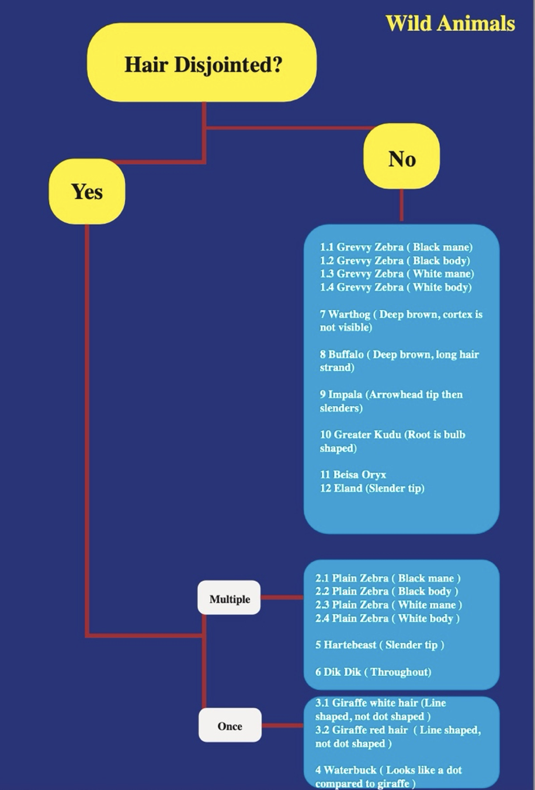

Working in Lewa's research lab under the head of predator research, I contributed to scat analysis work identifying what lions and hyenas are eating — and what that means for the conservancy's endangered species.
Why it matters
Understanding what predators eat is foundational to conservation management. For Lewa and the neighbouring Borana Conservancy, this question has a specific urgency: both conservancies together host 317 of Kenya's remaining Grevy's zebra — out of a national population of just over 3,000. Knowing whether lions and hyenas are preying on Grevy's zebra, and at what rates, directly informs how the conservancy manages and protects the herd.
This work was led by Felix Kasyoki, head of predator research at Lewa, whose quarterly reports on predation dynamics across the landscape depend on consistent, accurate scat identification. During my placement, I worked alongside Felix to assist with this process — and contributed to improving its accuracy and documentation.
The Lab Process
Scat samples from lions and hyenas collected across the Lewa and Borana landscape during field days.
Samples are dried to remove moisture and begin separating organic material for analysis.
Dried samples are rehydrated and washed to isolate hair strands and other identifiable material.
20 hair strands collected per sample, mounted on slides for microscopic examination of medulla and cortex structure.
Under the Microscope
Each animal species has a uniquely structured hair strand. Differentiation requires careful analysis of the medulla (the innermost, darker section) and the cortex (the outer layer) — looking at size, colour, breakage patterns, and overall morphology.

Single hair strand under microscope — the dark inner section is the medulla, surrounded by the lighter cortex layer.

Multiple strands mounted together — comparing structure, thickness, and tip morphology across specimens from the same sample.
Hair Identification
Cross-section diagram — hair strand anatomy
Every mammal species produces hair with a distinct internal structure. The medulla — the dark inner core — varies in width, continuity, and patterning between species. The cortex surrounds it and differs in colour, texture, and thickness.
Identifying a hair strand to species level means examining: whether the medulla is continuous or fragmented, the relative width of medulla to cortex, the shape of the hair tip, the colour and texture of the cortex, and any distinctive features like segmentation.
My Contribution
Drawing on guidance from Felix and existing reference material, I worked to refine and improve the identification process. This included improving reference sketches of known species, taking photographs of actual hair samples under the microscope for a visual reference library, and — the most significant contribution — developing a decision tree to systematise the identification logic.
My university training in earth science and mineral identification — which involves similar logic: classifying samples by physical properties under magnification — gave me a useful framework to apply here.

The hair identification decision tree developed during the placement — classifying wild animal species by medulla structure, cortex properties, and tip morphology.
What I contributed
Built a systematic identification framework to guide analysts through species classification by hair structure properties step-by-step.
Photographed actual hair samples under the microscope to create a photographic reference library to support future identification work.
Refined the hand-drawn reference sketches used by analysts to compare microscope observations against known species profiles.
Applied earth science and mineral identification methodology from university training to a biological classification challenge — an unexpected but effective transfer of skills.